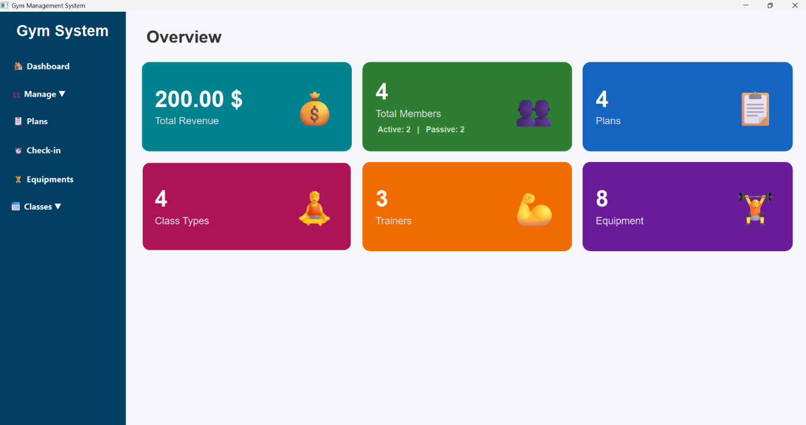
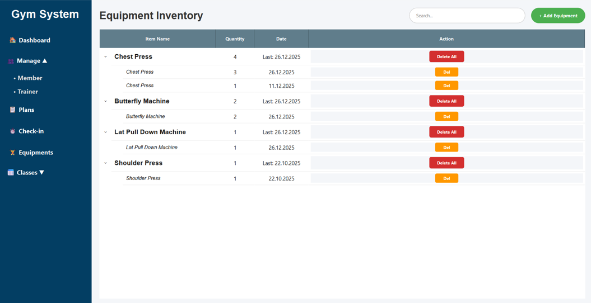

Projeler


Social Saver
Flutter ile geliştirdiğim bu uygualama, özellikle sosyal medya içeriklerini rahatça galeriye indirmek için tasarlandı. Proje'de api kullanımı ve kullanıcı deneyimi gibi kavramlar üzerine çalıştım.


2D Platform Oyunu
Pixel-art tarzında, dokunmatik kontrollü 2D platform oyunu. Can sistemi, düşmanlar, platform fiziği ve etkileşim mekanikleri içeriyor. Oyun döngüsü ve karakter kontrolü mantığı üzerine çalıştım. Hepsi hazır assettir.


Dalga Tabanlı Atış Oyunu
Unity ile geliştirdiğim 3D oyun. Basit Enemy AI ve Game Physics sistemleri içeriyor. Asset implementasyonu ve oyun mekaniği üzerine çalıştım. Oyun 3 dalga üzerine gelen düşmanları temizlemek üzerine kurulu.


Gym Management System
CENG 301 Veri tabanı dersinin projesi için geliştridiğimiz Spor Salonu Yönetimi masaüstü panel uygulaması. Python ve PyQt6 ile geliştirilmiştir. Gelir, üye ve ekipman istatistiklerini gösteren bir gösterge paneli; üye/eğitmen yönetimi; gruplanmış ekipman envanteri (ekleme/silme); check-in, plan ve sınıf takibi içeriyor. Veriler MySQL veritabanında tutuluyor.